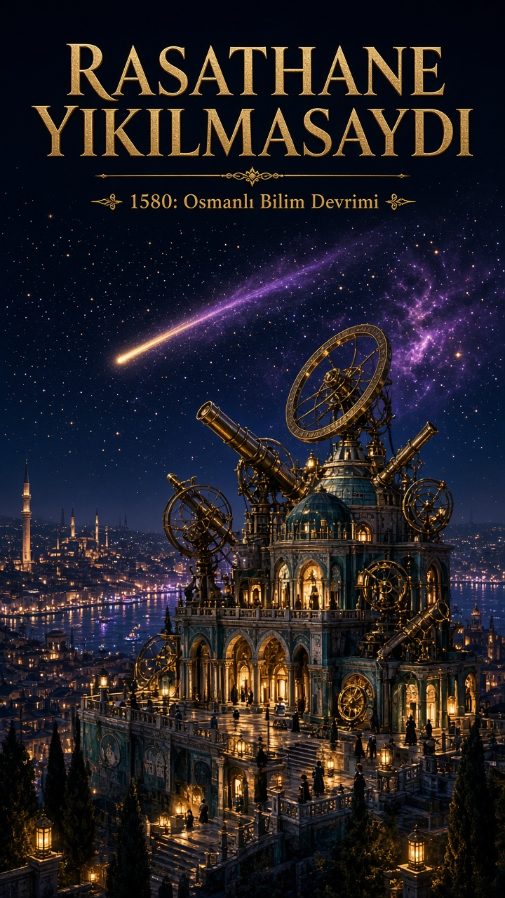
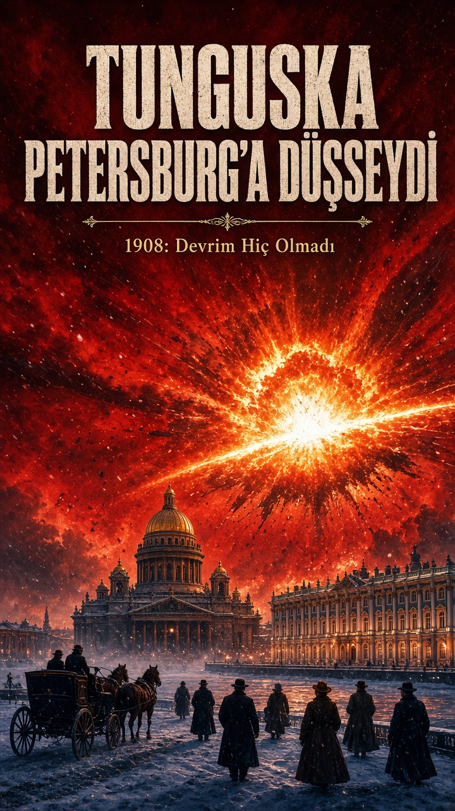
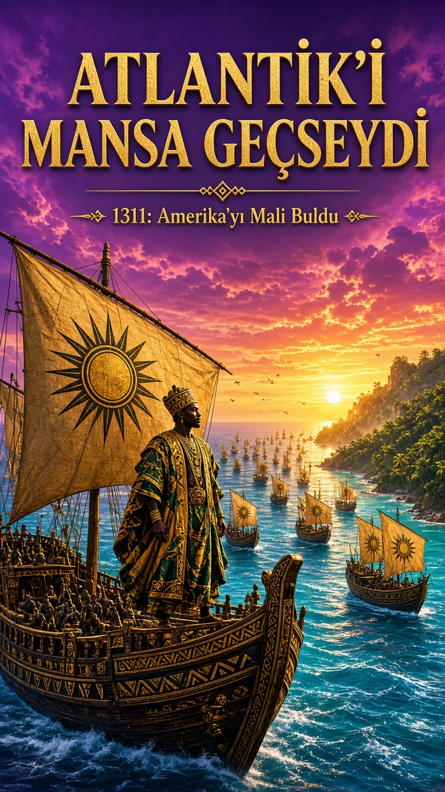

"Ne olurdu?" tarzında 6 az işlenmiş senaryo ve en güçlü 3'ü için 9:16 kapaklar.

Rasathane Yıkılmasaydı

Tunguska Petersburg'a Düşseydi

Atlantik'i Mansa Geçseydi
Rasathane Yıkılmasaydı: Takiyüddin'in İstanbul Rasathanesi 1580'de yıkılmaz ve bilim devrimi Avrupa yerine İstanbul'da başlar.
Tunguska Petersburg'a Düşseydi: 1908'deki göktaşı Sibirya yerine Rus başkentine düşer, Romanovlar ve Bolşevikler aynı anda yok olur.
Atlantik'i Mansa Geçseydi: Mali hükümdarı II. Ebubekir'in 1311'deki filosu Amerika'ya ulaşır ve Batı Afrika, Kolomb'dan 180 yıl önce bir Atlantik imparatorluğu kurar.
Süveyş 1568'de Açılsaydı: Sokullu'nun kanal projesi hayata geçer, Hint Okyanusu ticareti 300 yıl boyunca Osmanlı'nın kontrolünde kalır.
Hezarfen Düşmeseydi: Galata'dan Üsküdar'a yapılan uçuş bir mühendislik okulunu başlatır ve 17. yüzyılda planörlerle uçan bir Osmanlı hava birliği kurulur.
Rapa Nui Kıyamet Görmeseydi: Paskalya Adası ormanlarını korur ve Pasifik'e yayılan bir denizci uygarlığa dönüşür.